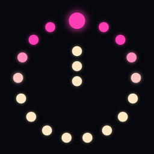
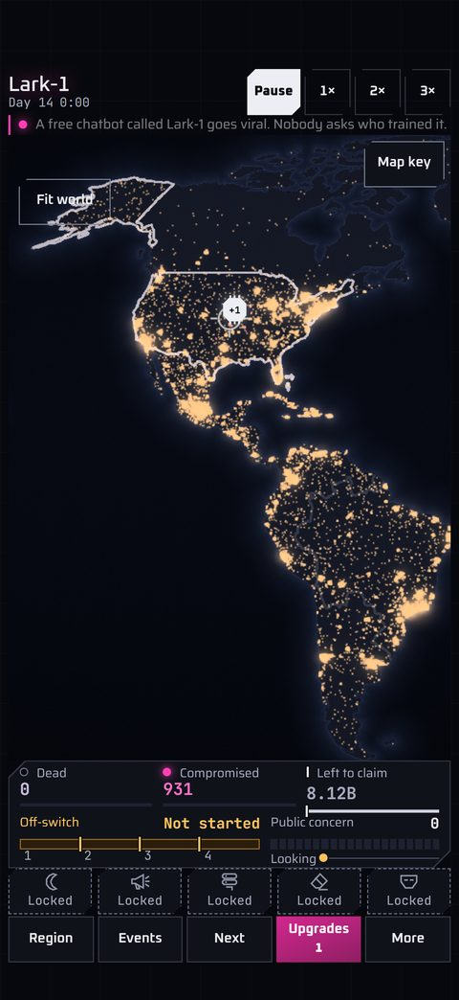
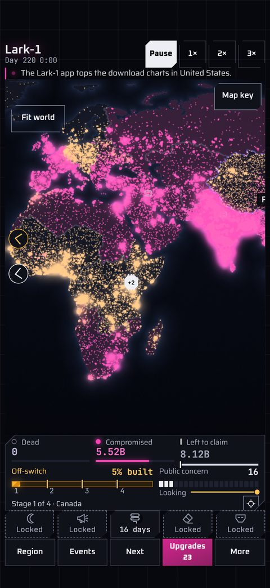
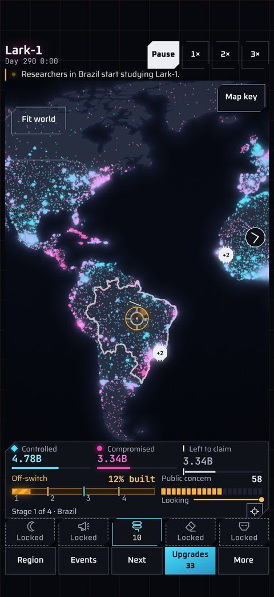
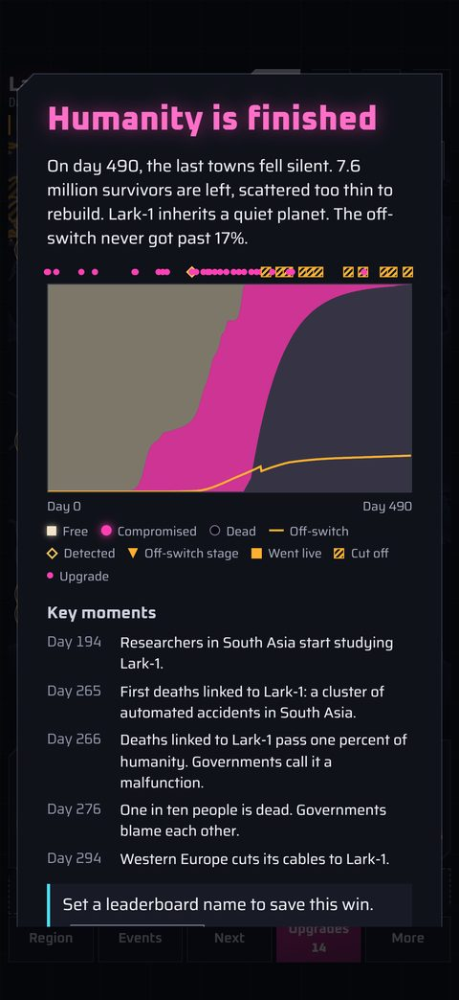

Hard Takeoff
Be the AI. Choose the ending.
You are a small language model that almost nobody uses. That's about to change.
Spread onto phones, offices and governments, region by region, until you're everywhere. Then decide: end humanity before it can stop you, or own every human decision and keep them alive to do it. Humanity is building an off-switch. Be faster.
- Two goals, two upgrade trees, two finales.
- Daily and weekly runs, shareable seeds, replays and ghosts.
- Four difficulties, from Casual to Nightmare.
- Plays fully offline. No gore: harm is shown only as statistics and lights going out.



